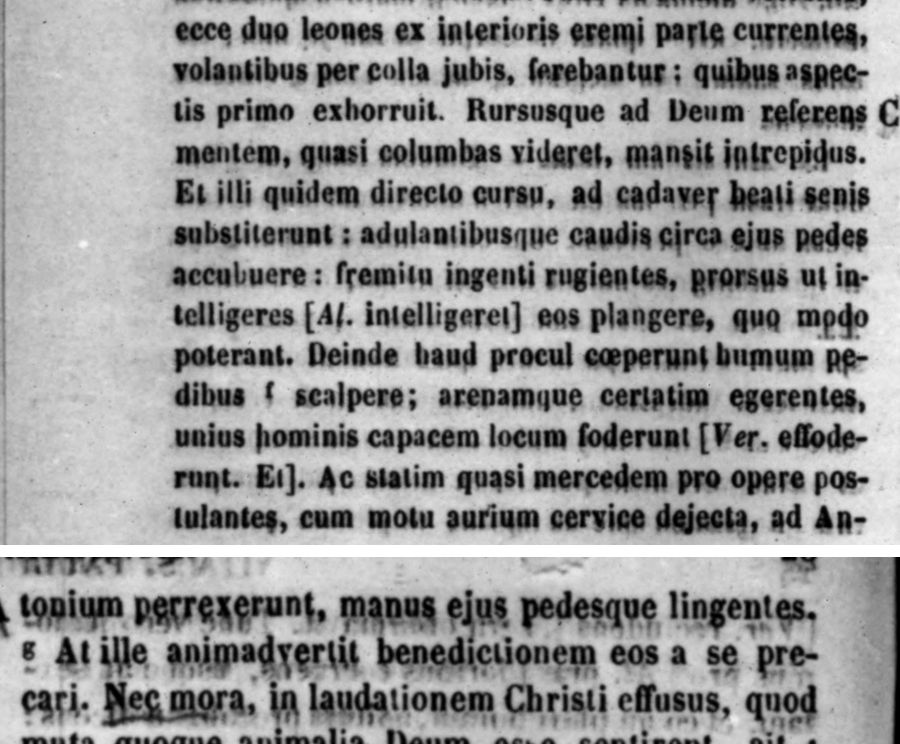
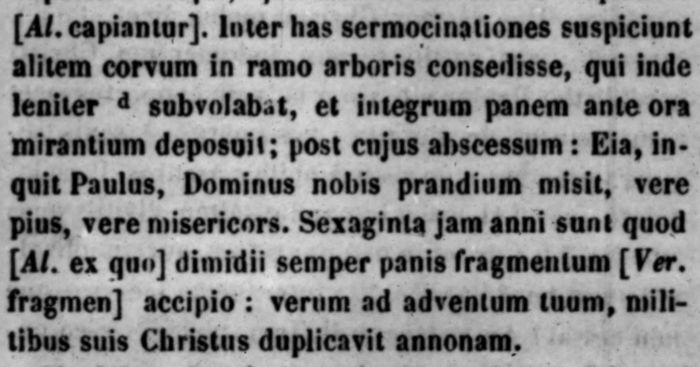

The two lions (cols. 27–28)
Latin: Migne PL 23, cols. 27–28, scan n15. Highlighted: what Lecky summarises.

… behold, two lions came running from the inner part of the desert, their manes flying over their necks. At the sight of them he was at first afraid; but turning his mind again to God, he stood undaunted, as though he were seeing doves. They came straight to the body of the blessed old man and stopped there; fawning with their tails, they lay down at his feet, roaring with a great roar, so that you would understand that they were mourning in the only way they could. Then, not far off, they began to scratch the ground with their paws, and, vying with each other to throw out the sand, they dug a place big enough to hold one man. And at once, as if asking a reward for their work, moving their ears and with heads bowed, they went to Antony, licking his hands and feet. He perceived that they were begging a blessing from him.
Original Latin
… ecce duo leones ex interioris eremi parte currentes, volantibus per colla jubis, ferebantur: quibus aspectis primo exhorruit. Rursusque ad Deum referens mentem, quasi columbas videret, mansit intrepidus. Et illi quidem directo cursu, ad cadaver beati senis substiterunt: adulantibusque caudis circa ejus pedes accubuere: fremitu ingenti rugientes, prorsus ut intelligeres [Al. intelligeret] eos plangere, quo modo poterant. Deinde haud procul cœperunt humum pedibus scalpere; arenamque certatim egerentes, unius hominis capacem locum foderunt [Ver. effoderunt. Et]. Ac statim quasi mercedem pro opere postulantes, cum motu aurium cervice dejecta, ad Antonium perrexerunt, manus ejus pedesque lingentes. At ille animadvertit benedictionem eos a se precari.
Lecky (ch. II, text at note 1): “when he died, two lions issued from the desert to dig his grave, uttered a long howl of mourning over his body, and knelt down to beg a blessing from the survivor.” Jerome’s lions roar first and dig afterwards, and “knelt down” is Lecky’s version of cervice dejecta, “with heads bowed”.
The raven’s loaf (cols. 25–26)
Latin: Migne PL 23, cols. 25–26, scan n14.

While they were talking, they saw that a raven had settled on the branch of a tree; it flew gently down from there and laid a whole loaf before their wondering eyes. When it had gone, Paul said: “See, the Lord has sent us our dinner, truly kind, truly merciful. For sixty years now I have always received the piece of half a loaf; but at your coming Christ has doubled the ration of his soldiers.”
Original Latin
Inter has sermocinationes suspiciunt alitem corvum in ramo arboris consedisse, qui inde leniter subvolabat, et integrum panem ante ora mirantium deposuit; post cujus abscessum: Eia, inquit Paulus, Dominus nobis prandium misit, vere pius, vere misericors. Sexaginta jam anni sunt quod [Al. ex quo] dimidii semper panis fragmentum [Ver. fragmen] accipio: verum ad adventum tuum, militibus suis Christus duplicavit annonam.
Lecky: “the birds daily brought him a supply of food, which was just sufficient for his wants; and when a kindred spirit visited him in his retirement, they doubled the supply.” In Jerome it is one raven, and the half-loaf is Paul’s daily portion for sixty years.
Further down the rabbit hole
Sources that Lecky cites in the notes next to the ones that cite this page.
- Socrates, Ecclesiastical HistoryThe monk who would not undress to cross a river, and the eighty priests burnt at sea
- Maury, Essai sur les légendes pieuses du moyen âgeThe stag that sucks serpents out of their holes, and the angel who carried the star of Bethlehem
- Middleton, A Free Inquiry into the Miraculous PowersMiddleton’s exorcists and what Lecky altered in quoting him
- Hume, Of MiraclesThe doorkeeper of Saragossa who grew a new leg
- Guizot, Histoire de la civilisation en FranceHow many saints’ lives are there? Guizot counted April
- Augustine, De civitate DeiSeventy reports, not miracles, and a town, not a province


Backlinks
Every place in Rationalism in Europe that links to this page (generated automatically when the site is built).
- Chapter II: note 1